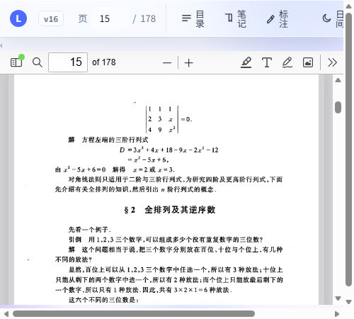
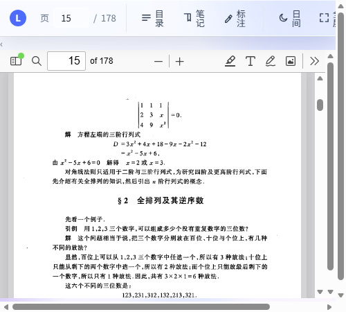
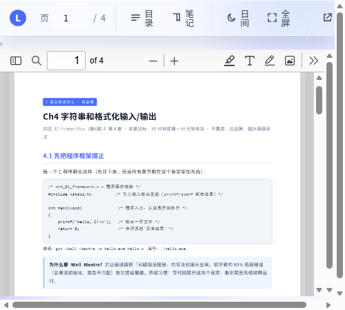
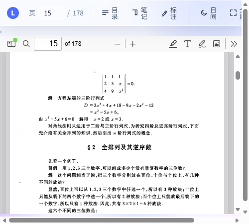
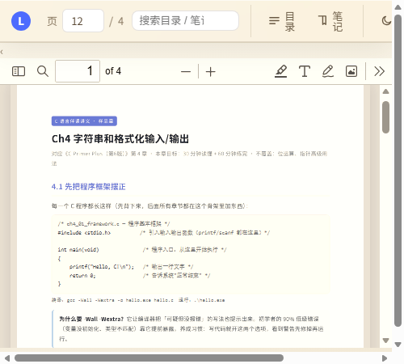

本地 PDF 阅读 · 目录树 · 划词/区域标注 · 笔记书签 · 平板离线
当前版本 v17lzm66691.github.io/lioli-reader/⋮ → 「添加到主屏幕」（Chrome）或 「安装应用」（Edge）。

F。阅读器支持两种标注方式，按 PDF 类型选择：



| 问题 | 解决 |
|---|---|
| PDF 加载不出来 | 校园网连 GitHub 慢：本机用 localhost:8920，平板同网用 100.87.159.50:8920（电脑端服务开启时） |
| 扫描版选不中文字 | 正常现象：扫描版是图片，请用「框选」区域标注 |
| 本地书没有目录 | PDF 无内置书签大纲则无法自动生成；有的大纲只有章级，会提示 |
| 版本号不是最新 | 强刷（Ctrl+F5）或重装 PWA 应用 |
| 标注怎么删除 | 点页面上的标注色块，或收藏夹标注列表点「删」 |